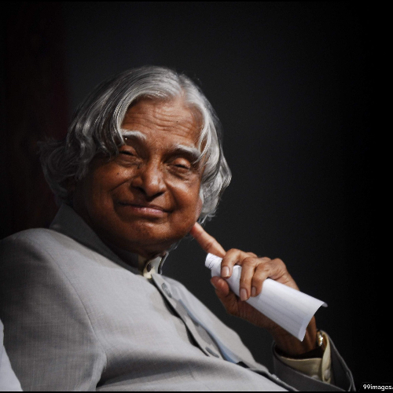
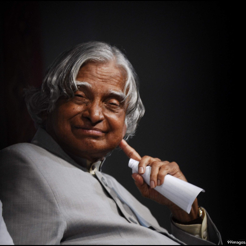

Biography
A.P.J. Abdul Kalam was an Indian scientist, educator, and statesman. Born in 1931 in Rameswaram, Tamil Nadu, he played a vital role in India's missile and nuclear weapons programs. Known as the "Missile Man of India," Kalam served as the President of India from 2002 to 2007. He came from a humble background but excelled academically, obtaining a degree in aeronautical engineering. He joined the Defense Research and Development Organization (DRDO) and contributed to the development of India's satellite launch vehicles and ballistic missiles. Kalam became the Chief Scientific Adviser to the Prime Minister in 1992 and played a key role in the Pokhran-II nuclear tests. As President, he focused on transforming India into a developed nation through technology, education, and innovation. Kalam was admired for his humble nature and his efforts to inspire and motivate students. He passed away in 2015 but left a lasting impact on India's scientific and technological progress.
 
